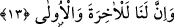
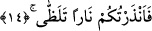
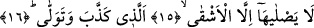

13. Şüphesiz âhiret de dünya da bizimdir.
Vaad ettiğimiz en kolaya hazırlamakla en zora hazırlamak dâhil, hem dünyada hem de
âhirette dilediğimiz fiillerle tam tasarruf Biz’e âiddir.
14. (Ey insanlar!) Alev alev yanan bir ateşle sizi uyardım.
Ey Mekke halkı! “Alev alev yanan bir ateşle sizi uyardım.” Sizi Kur’an vâsıtasıyla
korkuttum.
Ateşin şimdiki zaman ifâde eden bir fiille nitelenmesi alevinin bilfiil devam ettiğine
işâret etmek içindir.
Bazı tefsirlerde şöyle der: “Sizi uyardım” fiilinden maksad bizzat uyarmaktır. Ya da
bu ifâdeyle uyarmaktan haber verilip Müddessir sûresinde olduğu gibi daha önce geçen
uyarı kasdedilmiştir. Nitekim Müddessir sûresinde şöyle buyrulmuştur: “Ben onu
sekara (Cehenneme) sokacağım. Sen biliyor musun sekar nedir? Hem (bütün
bedeni helâk eder, hiçbir şey) bırakmaz. Hem (eski hale getirip tekrar azap
etmekten) vazgeçmez o. İnsanın derisini kavurur.” (el-Müddessir, 74/26-29) Çünkü
Müddessir sûresi müfessirlerin çoğuna göre ilk inen sûredir.
Bu âyet “Alevli ateşten korkun, sakının” denilmesinden daha korkunçtur.
15-16. O ateşe, ancak yalanlayıp yüz çeviren en kötüler girer.
“O ateşe ancak” hakkı “yalanlayıp” itâatten “yüz çeviren” -ki bu da kâfirden başkası
değildir- “kötüler” bedbahtlıkta ileri giden ve fâsıklardan daha bedbaht olan kâfirler
“girer.” Oradan ayrılmamacasına girer ve oranın harâret ve ateşini ancak bunlar
tadarlar.
Keşfü’l-esrâr’da der ki: “Eşkà’dan maksad şakî/bedbahttır. Araplar bir çok
sözlerinde fâili mübâlağa ile “en” diye ifâde ederler. “En üstün olan sizsiniz.” (Âl-i
İmrân, 3/139) ve “Sana en düşük seviyeli kimseler tabi olup dururken” (eş-Şuarâ,
26/111) âyetleri de buna örnektir.
Fâsık, çıkmamak üzere ve ebedî Cehenneme girmeyecektir. Nitekim Allah Teâlâ bu